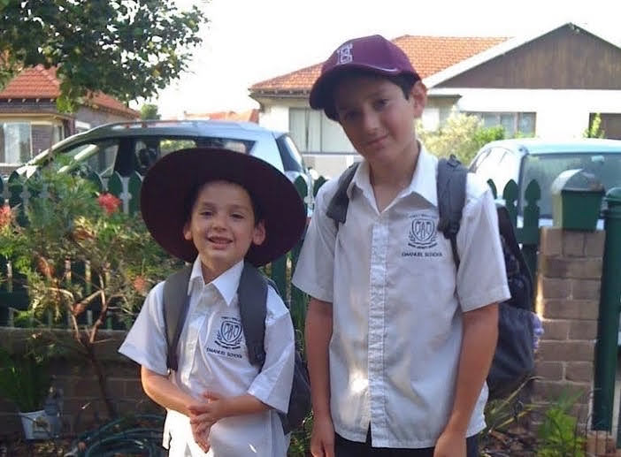

~/timeline/2010
Commenced School at Emanuel School
It all started here!
- Core subjects and foundation skills
- Early exposure to computers and the web
- Co-curriculars and club activities

~/timeline/McDonalds
Crew Member - McDonald's
Part-time role covering kitchen duties in a fast-paced team environment.
- Prep ingredients and assemble orders
- Serve customers at front counter and drive‑thru
- Restock stations and manage inventory
- Maintain food safety and hygiene standards
- Clean equipment and close stations

~/timeline/2022-hsc
Graduated High School (HSC)
Foundational learning in a tight-knit, values-driven environment.
- Graduated with a >90 ATAR.
- Heavily involved in the school's music program as a performer & leader.
- Strong involvement in IT & tech programs / events across entire school career.
- Held leadership positions and contributed to school events and community iniatives.
~/timeline/Elcom
Technical Writer & Manual Tester
Impactful industry experience.
- Reorganised and updated Elcom's documentation to match the relase of version 12.0 of elcomCMS.
- Played a major role in testing a pre-release version of a new update for elcomCMS according to tester scripts.
- Performed content population for Elcom's clients.
- Played a key role in preparing a training program to match new developments of elcomCMS.
~/timeline/code4fun
Lead Coding Instructor
Making programming engaging for young minds.
- Teaching classes both by myself and with others.
- Cooperation with teaching assistants & host schools.
- Proactive revision of lesson plans before each lesson.
- Writing new lesson plans & projects to commit to the curriculum for all teachers to use
~/timeline/uts
Bachelor of Computing Science (Honours)
Majoring in cybersecurity and networking
- Electives ranging across Data Science, Cybersecurity, and AI
- Developing and honing proficiency in Python, Java, SQL, full-stack web development, Linux systems, and scripting.
- Worked on a variety of individual and group-based projects.
- Experienced in using Git and GitHub for collaborative version control.
- Learned key principles of algorithms, data structures, and computational logic.
- Participated in labs involving Python, Java, C++, and Bash
- Developed software using agile methodologies and sprint-based workflows.
- Completed advanced mathematical units in calculus, linear algebra, and logic.
- Strong theoretical foundations from discrete mathematics and computing science units.
~/timeline/usm
Tropical Data Science School
Exploring data science through global collaboration and culture.
- Participated in a two-week intensive program focused on data science, combining academic learning with cultural immersion in Malaysia.

~/timeline/put
International Strategic Management Workshop
Gaining business insight in an international context.
- Worked in diverse, international teams to solve strategic business problems
- Collaborated with students representing universities in Australia, Vietnam, Poland, Finland, Germany, and France.
- Delivered presentations on market entry strategy, innovation, and digital transformation
- Participated in seminars led by industry experts and academic professionals.
- Explored Poznań's cultural and historical landmarks as part of the exchange.
This experience enhanced my ability to think critically about business strategy, while building strong communication skills across different cultural and academic backgrounds.